Саратов: ул. Автомобильная, 73 (пос. Юбилейный)
тел. (8452) 25-40-49, 466-956
тел. (8452) 25-40-49, 466-956
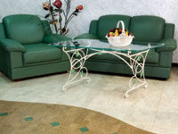
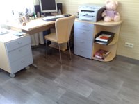
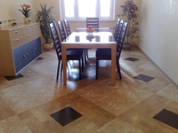 Пробковые покрытия в СаратовеПреимущества покрытий из пробкиМаксимум Комфорта
Клеящиеся
полы из натуральной пробки без сомнения придадут неповторимый колорити
уникальный дизайн для Вашего дома, будь то прихожая или гостиная,
спальная или кухня, ванная комната или лоджия.
Экология
Одно из самых главных достоинств пробковых покрытий - экологическая чистота и большой природный потенциал защитных свойств от вредных излучений. Ученые доказали, что пробковое покрытие надежно защищают от аномальных полей, ослабляя действие геопатогенных зон на 75-80 процентов. Здоровье Прочность, в сочетании с мягкостью и упругостью, влагостойкость, теплота,оптимальное сопротивление скольжению которыми обладают пробковые покрытия создают приятное ощущение при ходьбе, снижая нагрузку на опорно-двигательный аппарат человека, благотворно влияя на его здоровье. Мягкость Благодаря
своему строению, пробка чрезвычайно упругий материал, который очень
хорошо сжимается. Но еще более ценно, что после снятия нагрузки,
пробковое покрытие
почти полностью восстанавливает прежнюю форму и
размеры.
Тишина Пробковые покрытия - это лучший из природных тепло- и звукоизоляторов. Они позволяют уменьшить колебания и вибрацию звука в помещениях. Поэтому их можно использовать в музыкальных студиях, концертных залах, кинотеатрах, библиотеках. Легкая и быстрая
укладка
Теплые пробковые полы это надежность и комфорт. Пробковый пол системы CorkLOC® укладываются по принципу "замок". Уникальная пробковая сердцевина, в сочетании с пробковой подложкой, поглощает звук, утепляет пол, амортизирует давление и создает приятное ощущение при ходьбе. |
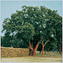 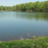 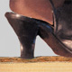 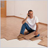 |
|
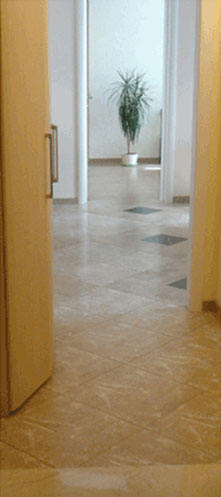 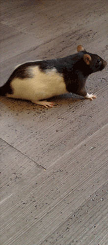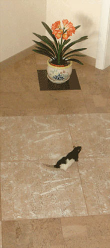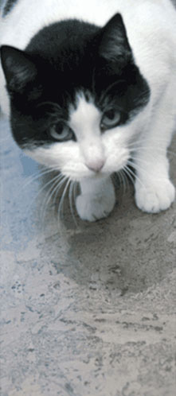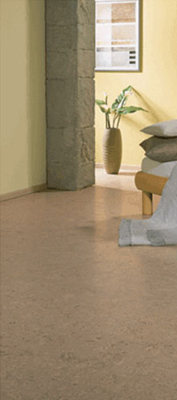
 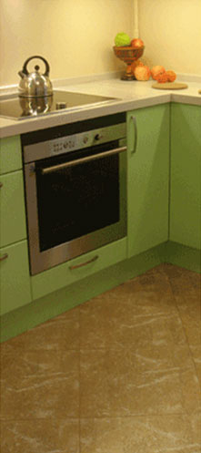 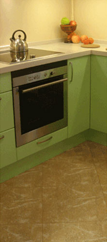 |